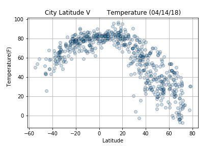

Latitude ~ [Temperature, Humidity, Clouds, Wind Speed]

Does proximity to the equator affect the weather? First data was pulled from the OpenWeatherMap API to assemble a random dataset on over 500 cities.
Next Matplotlib was used to plot aspects of the weather. Factors included: temperature, cloudiness, wind speed, and humidity.